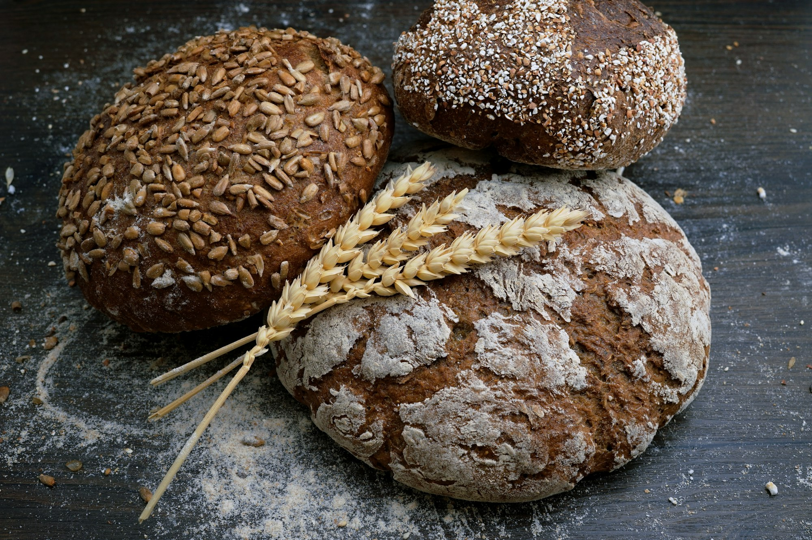
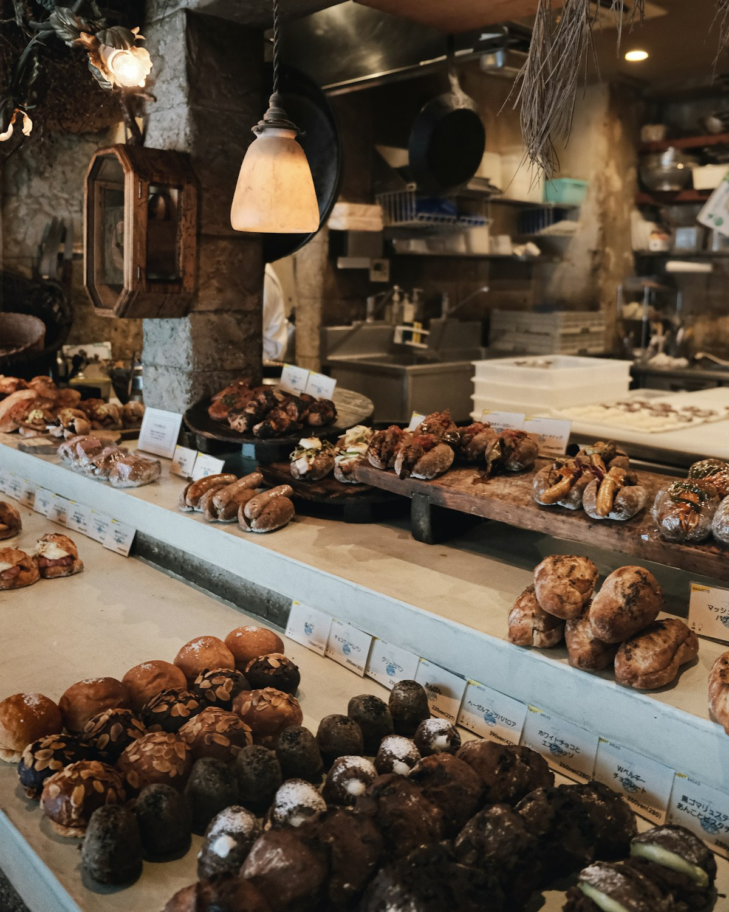
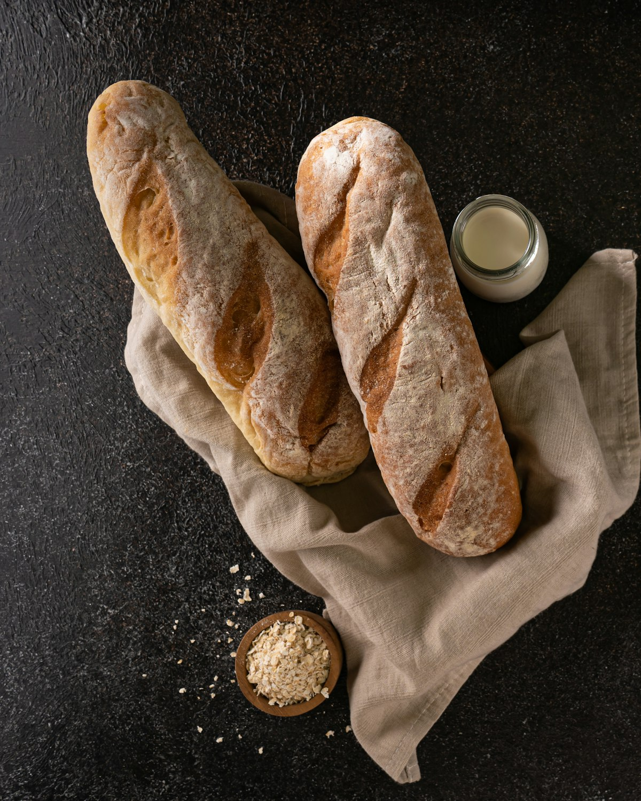
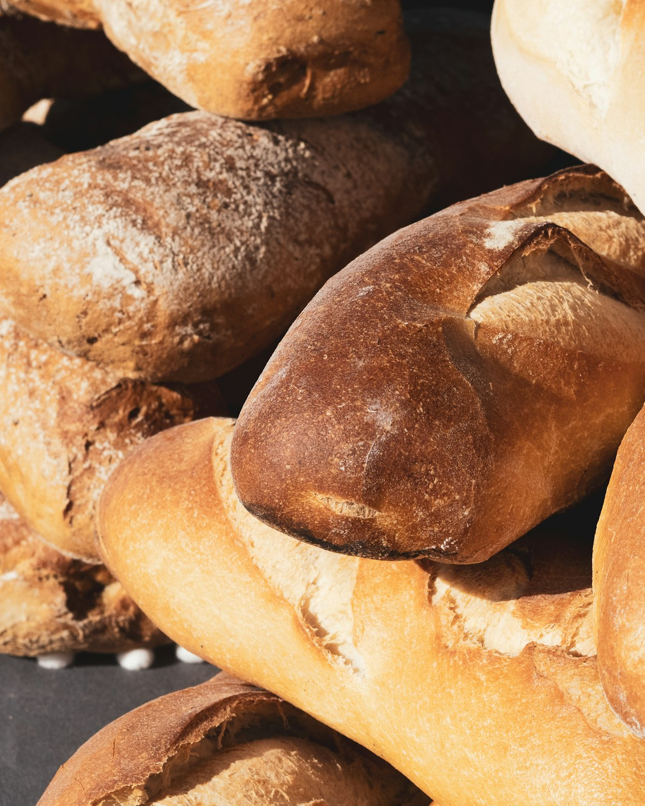
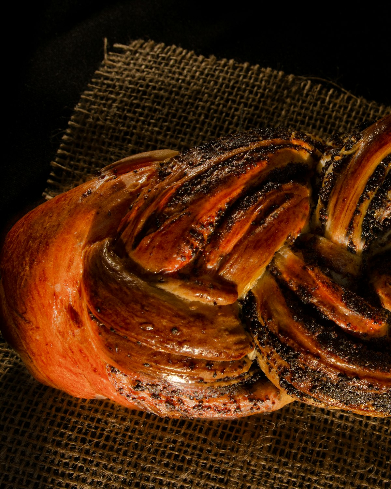
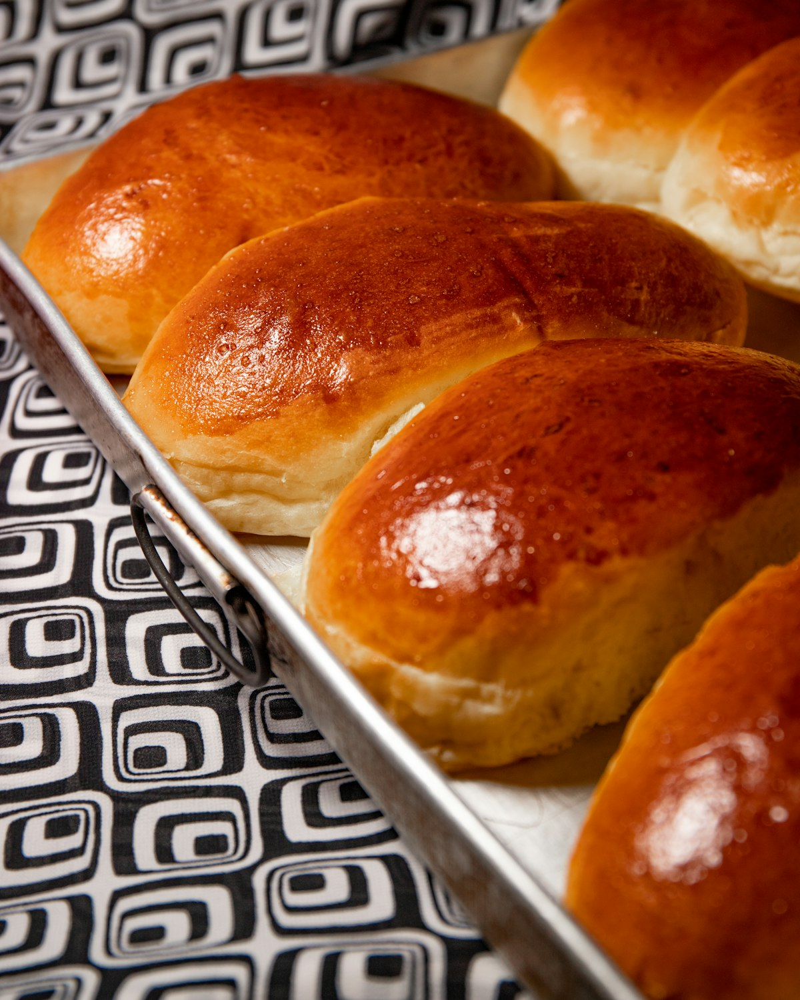
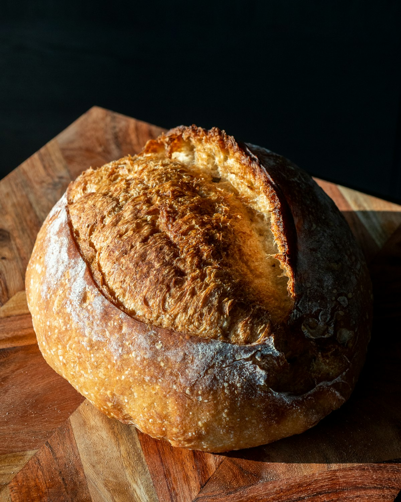

Brezeln
Die schwäbische Brezel: dünne, knusprige Ärmchen und ein weicher, dicker Bauch.

Weserstraße 25 · Berlin-Friedrichshain
Knusprige Brötchen am Morgen, Brezeln und Seelen nach schwäbischer Art und süße Schnecken für den Nachmittag – Ihre Bäckerei in Berlin-Friedrichshain.
4,2 von 5 bei Google
126 Bewertungen

Über uns
Zwischen Ostkreuz und Boxhagener Kiez ist die Schwäbische Bäckerei für viele Nachbarinnen und Nachbarn der erste Halt am Morgen. Hier gibt es frisches Gebäck für den Frühstückstisch, die Brezel für unterwegs und Kuchen für den Nachmittag.
Unsere Brötchen sind luftig und knusprig, die Seelen bekommen ihre typische Note von Salz und Kümmel – so wie man sie aus dem Süden kennt.
Aus der Backstube
Eine Auswahl dessen, was Sie bei uns finden – das Angebot wechselt je nach Tag und Saison.
Die schwäbische Brezel: dünne, knusprige Ärmchen und ein weicher, dicker Bauch.

Lange Seelen mit Kümmel und grobem Salz – außen knusprig, innen saftig.

Luftig, knusprig und morgens frisch – der Klassiker für jeden Frühstückstisch.

Vom Hefezopf bis zum Teilchen – perfekt zum Kaffee am Nachmittag.

Weich, fluffig und goldbraun glänzend – zum Frühstück oder einfach so.

Kräftig ausgebacken mit rescher Kruste – fragen Sie gern nach den Sorten des Tages.
Schwäbische Backkunst – frisch für den Kiez.
4,2 von 5 Sternen aus 126 Google-Bewertungen
Vorbestellen
Für größere Mengen – etwa fürs Büro-Frühstück, den Geburtstag oder das Wochenende mit Gästen – nehmen wir Ihre Bestellung gern vorab entgegen. Am schnellsten geht es telefonisch.
030 29 35 15 68Besuch